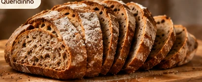
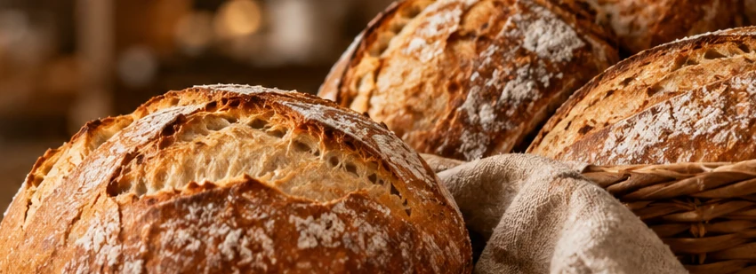
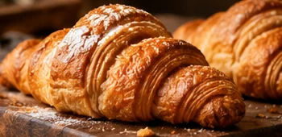
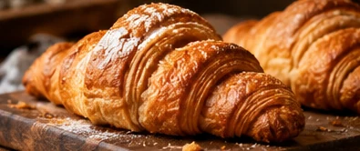
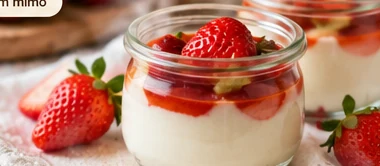
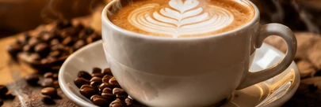
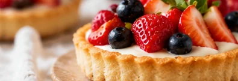
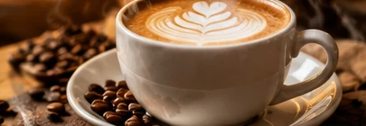

Queridinho
PÃES
Pão artesanal
Crocante por fora, macio por dentro. Um clássico.
O cheirinho de pão saindo do forno, um café passado na hora e aquele carinho que transforma qualquer dia.

Saindo do fornoPães fresquinhos diariamente
Café com carinhoO encontro perfeito do dia
Receitas especiaisSabor de casa em cada mordida

Acreditamos nos pequenos momentos: uma conversa sem pressa, o pão quentinho na mesa e o café que reúne pessoas.
Por aqui, cada receita é um convite para desacelerar e aproveitar o que a vida tem de mais gostoso.
Venha nos conhecerUm pouquinho das delícias que fazem parte dos nossos dias.

QueridinhoCrocante por fora, macio por dentro. Um clássico.

Camadas leves, douradinhas e irresistíveis.

Um mimoAquele carinho em forma de sobremesa.

Quentinho, aromático e feito na hora.

Uma fatia de felicidade para adoçar o dia.

Perfeito para acompanhar uma boa conversa.
Produtos preparados com atenção aos detalhes e aquele gostinho de feito em casa.
Um ambiente pensado para tomar um café e aproveitar o presente.
Atendimento acolhedor, do primeiro bom-dia ao último até logo.

um café, uma pausa, um sorriso ☺Quer fazer um pedido, consultar nossos produtos ou simplesmente passar para um café? Vai ser um prazer te receber.
EndereçoRua Exemplo, 123 — Centro
Caxias do Sul, RS
Horário de atendimentoSegunda a sábado: 7h às 19h
Domingo: 8h às 13h
Fale com a gente(54) 99999-9999
Todo dia é dia de
pão quentinho,